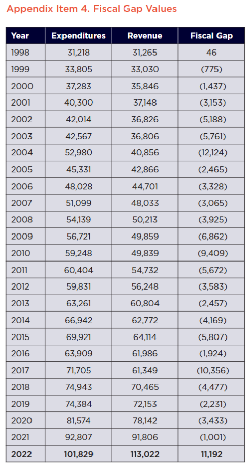

15 Past Report Corrections
We would like to draw attention to a methodological change that occurred in the data aggregation process when calculating the Fiscal Gap. The following reports had fiscal gaps reported that were larger than they would have been if using the methodology used when calculating the FY2023 fiscal gap.
Merriman, David F. & Xiaoyan Hu, (2021). “Illinois’ Fiscal Challenges: Where are we now and how do we proceed? April 22, 2021 for Fiscal Year 2020
- The fiscal gap was reported as $4.4 billion deficit and should have been a $1.0 billion deficit.
Choi, Francis, Alea Wilbur-Mujtaba & David Merriman (2023). “Assessing Illinois’ Fiscal Future After an Influx of Federal Funds” for Fiscal Year 2021
- The fiscal gap was reported as $1 billion deficit and should have been reported as a $2.3 billion surplus (when including state CURE revenue)
Wilbur-Mujtaba, Alea, Francis Choi & David Merriman (2023). “Recovering from a COVID (Spending) Fever” for Fiscal Year 2022
- Fiscal gap was reported as $11.2 billion and should have been $16 billion (when including state CURE revenue)
(a) Fiscal Gap for each Fiscal Year ($ Millions of Nominal Dollars)
| Fiscal Year | Expenditures | Revenue | Fiscal Gap |
|---|---|---|---|
| 1998 | 31218 | 31265 | 46 |
| 1999 | 33805 | 33030 | -775 |
| 2000 | 37283 | 35846 | -1437 |
| 2001 | 40300 | 37148 | -3153 |
| 2002 | 42014 | 36826 | -5188 |
| 2003 | 42567 | 36806 | -5761 |
| 2004 | 52980 | 40856 | -12124 |
| 2005 | 45331 | 42866 | -2465 |
| 2006 | 48028 | 44701 | -3328 |
| 2007 | 51099 | 48033 | -3065 |
| 2008 | 54139 | 50213 | -3925 |
| 2009 | 56721 | 49859 | -6862 |
| 2010 | 59248 | 49839 | -9409 |
| 2011 | 60404 | 54732 | -5672 |
| 2012 | 59831 | 56248 | -3583 |
| 2013 | 63261 | 60804 | -2457 |
| 2014 | 66942 | 62772 | -4169 |
| 2015 | 69921 | 64114 | -5807 |
| 2016 | 63909 | 61986 | -1924 |
| 2017 | 71705 | 61349 | -10356 |
| 2018 | 74943 | 70465 | -4477 |
| 2019 | 74384 | 72153 | -2231 |
| 2020 | 81574 | 78142 | -3433 |
| 2021 | 92807 | 91806 | -1001 |
| 2022 | 99786 | 113029 | 13243 |
| 2023 | 110575 | 108086 | -2489 |
15.1 Yearly Change Tables
(b) Yearly Change in Expenditures
| EXPENDITURE CATEGORY | FY 2023 ($ BILLIONS) | FY 2022 ($ BILLIONS) | 1-YEAR CHANGE | 25-YEAR CAGR |
|---|---|---|---|---|
| Medicaid | 32.4 | 28.7 | 13.1% | 7.4% |
| K-12 Education | 14.7 | 13.4 | 9.9% | 4.3% |
| Local Govt Revenue Sharing | 10.9 | 10.3 | 5.4% | 4.7% |
| Human Services | 8.8 | 7.3 | 21.3% | 3.3% |
| State Pension Contribution | 6.8 | 6.5 | 5.1% | 10.5% |
| Transportation | 5.0 | 4.3 | 16.3% | 3.8% |
| State Employee Healthcare | 3.0 | 3.0 | -0.1% | 5.8% |
| University Education | 2.5 | 2.3 | 12.5% | 0.8% |
| Debt Service | 2.0 | 2.0 | -2.9% | 5.7% |
| Revenue | 2.0 | 1.8 | 8.0% | 6.4% |
| Tollway | 1.9 | 2.1 | -9.9% | 6.8% |
| Corrections | 1.7 | 1.5 | 13.5% | 2.2% |
| Public Safety | 1.7 | 1.7 | 1.2% | 5.7% |
| Children & Family Services | 1.6 | 1.3 | 26.0% | 0.8% |
| Community Development | 1.5 | 1.4 | 7.7% | 4.8% |
| All Other Expenditures ** | 14.0 | 12.2 | 14.4% | 5.7% |
| Total Expenditures | 110.6 | 99.8 | 10.8% | 5.2% |
(c) Yearly Change in Revenue Sources
| REVENUE CATEGORY | FY 2023 ($ BILLIONS) | FY 2022 ($ BILLIONS) | 1-YEAR CHANGE | 25-YEAR CHANGE |
|---|---|---|---|---|
| Income Tax | 22.1 | 23.8 | -7.3% | 5.1% |
| Federal Medicaid Reimbursements | 20.2 | 19.0 | 6.1% | 7.5% |
| Sales Tax | 16.2 | 15.4 | 4.8% | 3.3% |
| Federal Other | 10.9 | 19.4 | -43.9% | 4.3% |
| Corporate Income Tax | 10.1 | 9.7 | 4.3% | 7.6% |
| Medical Provider Assessments | 4.1 | 3.7 | 9.5% | 8.4% |
| Receipts from Revenue Producing | 2.6 | 2.4 | 8.5% | 5.2% |
| Motor Fuel Taxes | 2.5 | 2.5 | 1.5% | 2.7% |
| Federal Transportation | 2.1 | 1.8 | 15.3% | 3.8% |
| Licenses, Fees, Registration | 2.1 | 1.9 | 9.2% | 7.9% |
| All Other Sources ** | 15.2 | 13.3 | 14.4% | 4.3% |
| Total Revenue | 108.1 | 113.0 | -4.4% | 5.1% |
The Fiscal Gap was reported to be larger than it was due to excluding fund 0278 (Income Tax Refund Fund) and manually subtracting Tax Refunds from the Income and Corporate Tax Revenue. This resulted in an extra $2+ Billion being subtracted from the revenue side and an increased fiscal gap.
15.1.1 Other comments on past reports:
In the FY2013 to FY2014 reports, the fiscal gap changed by over $4 billion in the 2010 calculations alone (the FY2013 report had around $12 billion gap and then FY14 report had around $8 billion for the fiscal gap).
FY20 vs FY23 reports:
Output created for the FY20 report had $3.622 billion for Debt Service, whereas the value is 1.947 billion using the FY23 methodology. State Pension calculations also had $3 or $4 billion changes in aggregate expenditures (9.2 vs 5.3 billion) each year.

There have been other minor changes in how the fiscal gap is calculated over the years. For example, various methodology documents referenced including the debt principal and interest. Some expenditure categories created by the past researchers included certain items in some years, and excluded them in others. This is partly due to changes in how the research was conducted (Excel tables, Stata, and then R) and due to changing ideology of what should or should not be considered as a reoccuring revenue source or expense. Most revenue and expenditure categories have remained consistent, with nearly identical totals when calculated by various researchers over the years, but some categories have varied in totals and calculation methods.
These differences impacted the overall Fiscal Gap calculated in previous reports:
Debt Service (Over estimated in some years due to counting Principal & Interest instead of just Interest as a cost of debt)
Pensions (over estimated due to including object 4430 for retirement benefits paid to employees instead of object 4431 for state payments into the pension fund)
Employee Healthcare (over estimated? - I think this was almost a mistake in FY21 and FY22 papers but then it was caught before being published - somewhere there is a printed excel sheet of healthcare expenditures that is highlighted, find it and double check.)
Individual Income Tax Revenue (under estimated from refund fund subtraction)